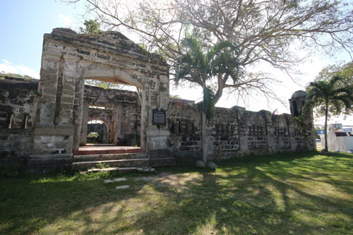
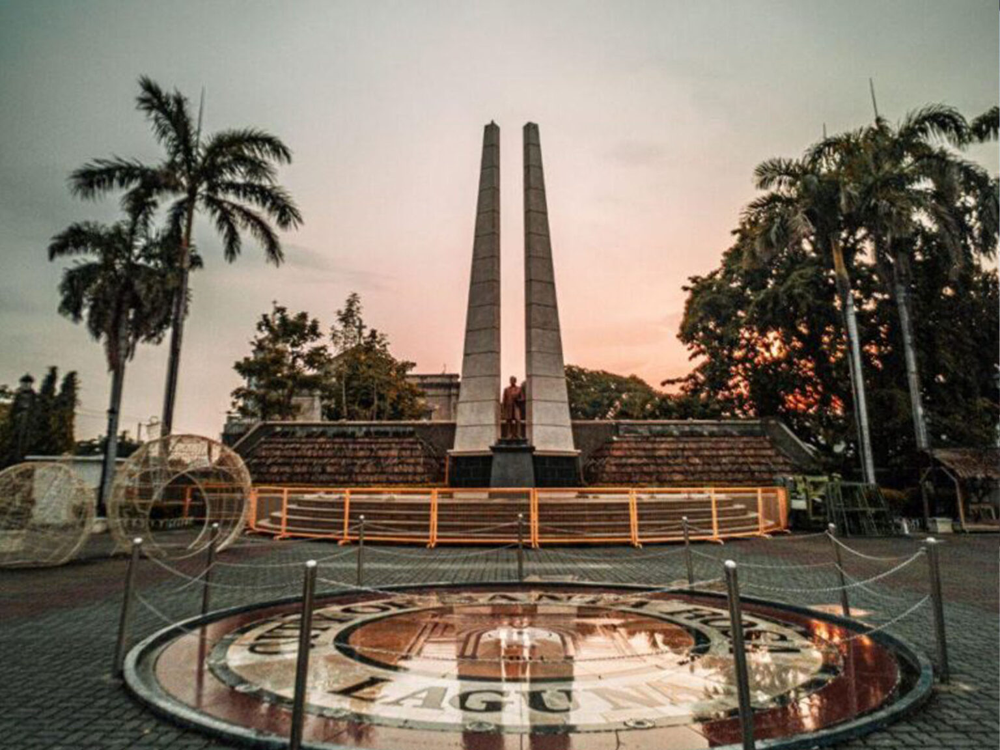

Discover Santa Rosa
-

Santa Rosa de Lima Parish Church
The Santa Rosa de Lima Parish Church was built in the year 1792 with the arrival of Spanish Catholic priest, Francisco Favie. Both the church and the convent were completed within 12 years.
-

Cuartel de Santo Domingo
Also known as Fort Sto. Domingo and Intramuros of Sta. Rosa, is an old two-storey Spanish barracks building in Santa Rosa, Laguna in the Philippines. It is currently used as the headquarters of the Special Action Force of the Philippine National Police.
-

The City Plaza
The City Plaza is a central gathering place in Santa Rosa where locals and visitors alike come to relax and socialize. It often hosts various events and festivals, making it a vibrant hub of activity.
-

Enchanted Kingdom
Enchanted Kingdom is a theme park located in Santa Rosa, Laguna. It opened in 1995 and is considered one of the premier amusement parks in the Philippines, offering a variety of rides, attractions, and entertainment options for visitors of all ages.